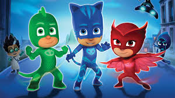
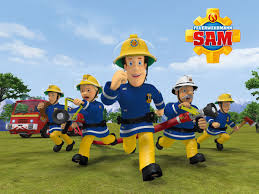
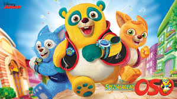

|  |
PJ MasksPJ Masks is an animated children's television series produced by Entertainment One, Frog Box, and TeamTO. The series is based on the Les Pyjamasques book series by Romuald Racioppo. The series debuted on Disney Junior in the United States on September 18, 2015. In June 2016, a second season, consisting of another 52 11-minute segments, was announced; it began airing on January 15, 2018.. |
|  |
Fireman SamFireman Sam is a British animated comedy children's series about a fireman called Sam, his fellow firefighters, and other residents in the fictional Welsh rural village of Pontypandy (a portmanteau of two real towns, Pontypridd and Tonypandy, which are situated approximately 5 miles (8 km) apart in the South Wales Valleys). The original idea for the show came from two ex-firemen from London, England, who took their idea to artist and writer Rob Lee who developed the concept, and the show was commissioned. |
|  |
Special Agent OsoSpecial Agent Oso is an interactive American CGI-animated series for pre-school audiences series created by Ford Riley. The series premiered on April 4, 2009 as part of Disney Channel's Playhouse Disney block, and was one of the charter series that was part of the replacement Disney Junior block which started on February 14, 2011, and later, the Disney Junior channel. |
This page has been coded during the FullStack program @LeWagon.That was probably the best experience of my entire.